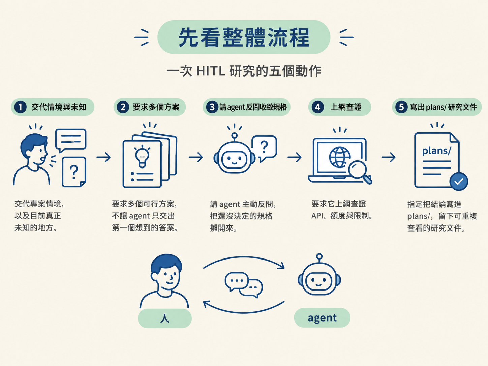
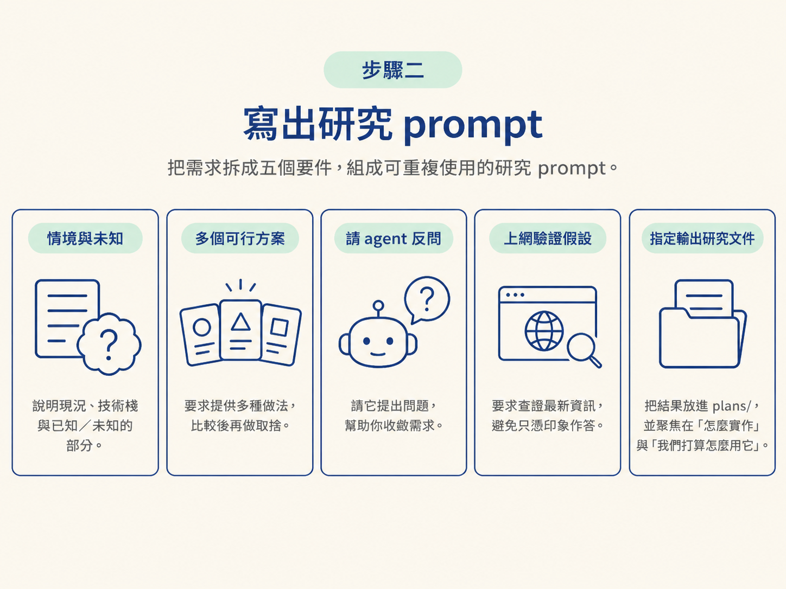
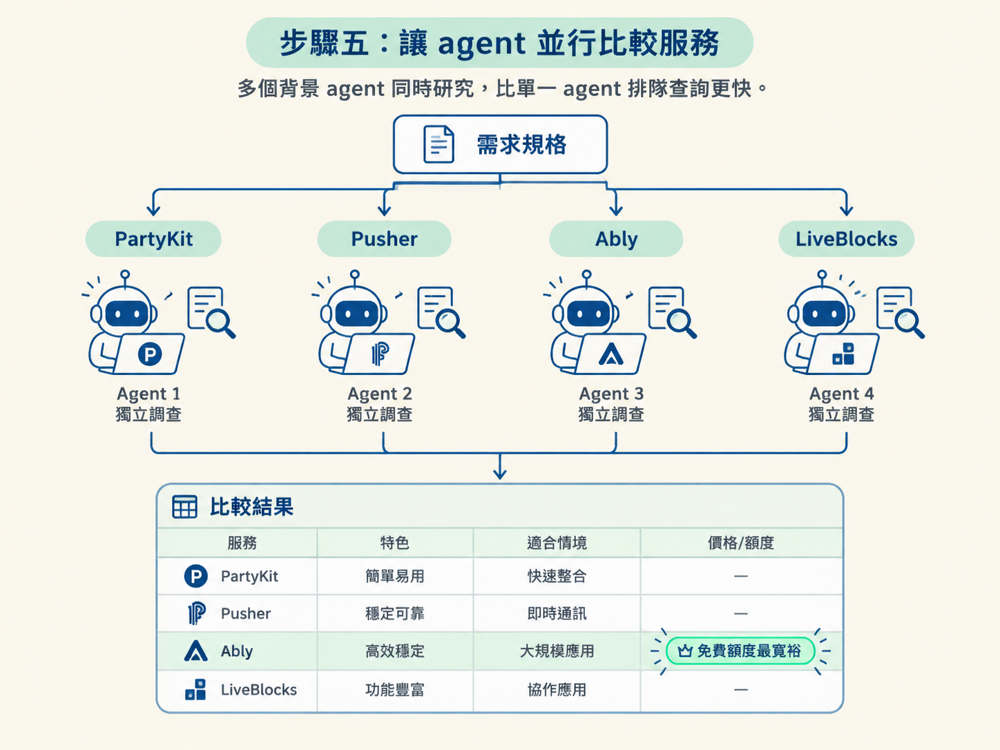

這一節會帶你照著一個可重複使用的研究 prompt，完成一次 HITL（Human-in-the-Loop，人類參與決策）研究。你會要求 Claude Code 提出多個方案、透過提問反覆收斂需求、上網驗證假設，最後把結果寫成 plans/ 目錄底下的一份研究文件。
動手前需要準備：一個可以開 Claude Code 的 repo、一個用來存放研究文件的 plans/ 目錄，以及一段你能留在旁邊回答問題、拍板取捨的時間。這裡不需要任何 skill，直接使用 Claude Code 就可以。
我們會用一個實際需求貫穿整節：在課程頁面加上一個「誰正在看這堂課」的即時 presence 指示器。整個流程可以想成五個動作：
plans/，留下可重複查看的研究文件。
接下來就照這個順序跑一次。
上一節說明了為什麼要把探索快取下來。但真的坐到電腦前，你可能會先卡在一個很具體的問題：我到底該怎麼問，才能問出一份有用的研究？
如果只把「幫我研究一下即時通訊服務」丟給 agent，通常只會拿回一段泛泛的介紹。那段文字既不能直接拿來做決定，也不能直接拿來實作。
所以第一步先別急著問「哪個服務最好」，先把 agent 放進正確的情境裡。告訴它目前的技術棧、已經有什麼、還缺什麼，以及你想研究的具體功能。
好的研究 prompt 通常是一組要求，不是一句話。這些要求合起來，會讓 agent 從給答案的機器，變成跟你一起收斂方向的研究夥伴。一份可重複使用的 prompt，至少要包含以下五個要件：
plans/，並聚焦在「怎麼實作」與「我們打算怎麼用它」。
把這五點寫進 prompt，大概會長這樣：
我要在 lesson 頁面加上「誰正在看這堂課」的即時 presence 指示器。
我們的 stack 是 React Router v7 全端 SSR，目前沒有任何即時通訊基礎設施。
請你不要只給一個答案，先列出幾種可行的做法讓我比較。
過程中有需要我拍板的取捨（例如規模多大、要多即時），直接問我。
請上網查證你的假設，不要只憑印象。
最後把結論寫成一份 research 文件，放在 plans/live-presence-indicator，
內容聚焦在「怎麼實作」與「我們打算怎麼用它」。這段 prompt 的每一部分都有明確任務。
第一段先把場景釘牢：這是 React Router v7 全端 SSR 的專案，而且目前沒有即時通訊基礎設施。agent 必須在這個前提下思考，而不是端出一個跟你的 stack 無關的方案。
第二段加上「不要只給一個答案」，是為了逼出選項與比較。第三段把發球權交回給你，要求 agent 主動詢問規格。第四段的「上網查證」則像一道品質保險，避免把過時資訊當成事實。
最後一段則把產出要求成一份留在 repo 裡的文件，免得只是一段做完就消失的聊天回覆。
把 prompt 送出去後，agent 會先探你的 stack，不會馬上丟出方案。它會查看專案用了哪些框架，以及目前是否已經有即時通訊基礎設施。
在這個例子裡，它會發現專案是 React Router v7 的全端 SSR，而且完全沒有即時通訊的地基。不論最後選哪一條路，都得從零接入一套即時通訊方案。
接著，agent 會把規格問題丟回來。這些問題其實已經很接近 PRD 的內容，請依序回答尚未決定的取捨：
在這個例子裡，需求收斂成以下答案：大約二十個學生同時上線、需要真正的即時更新、資料是短暫的，而且傾向使用外部服務。
這一步不要假裝自己已經知道答案。若某個取捨還沒決定，就讓 agent 把問題問出來；人要在旁邊拍板，研究才會對實際專案有用。
規格清楚後，agent 就可以開始並行研究。它會一次派出好幾個背景 agent，各自比較一個服務：PartyKit、Pusher、Ably、LiveBlocks，各有人負責。
這裡有一個很實用的做法：當你的未知是「該選哪個服務」時，讓不同的背景 agent 分頭查，比由一個 agent 排隊慢慢查更快。每個 agent 各自研究一個選項，最後再把結果放在一起比較。

把比較結果和「免費額度要夠用」這個現實條件放在一起後，最後選了 Ably。主要原因是，以這個規模來說，它提供的免費方案相當寬裕。
研究跑完後，你手上會多一份大約三百行的研究文件。裡頭除了結論，也把整段過程記了下來，包括：
下一節會把這份文件拆開來看，進一步說明一份好的研究文件應該有哪些區塊。
研究 prompt 的五個要件：講清楚情境與未知、要求多個方案、請它反問你來收斂、要求上網驗證、指定輸出到 plans/ 的一份文件。實際跑起來，agent 會先探 stack，再把規格問題丟回來；規格定了，它會派出多個背景 agent 並行比較服務，最後產出一份完整的紀錄。整段流程不需要 skill，用 Claude Code 就能做，但人要在旁邊拍板。
完成這些步驟後，你已經有了一份研究文件。不過，「有寫」和「寫得好」是兩件事：一份堆滿連結、卻沒有告訴你該選什麼的文件，跟沒有文件差不多。
下一節會拆解一份好文件的骨架，以及它為什麼應該是 repo 裡的檔案，而不是開成一張 GitHub issue。